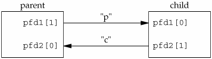
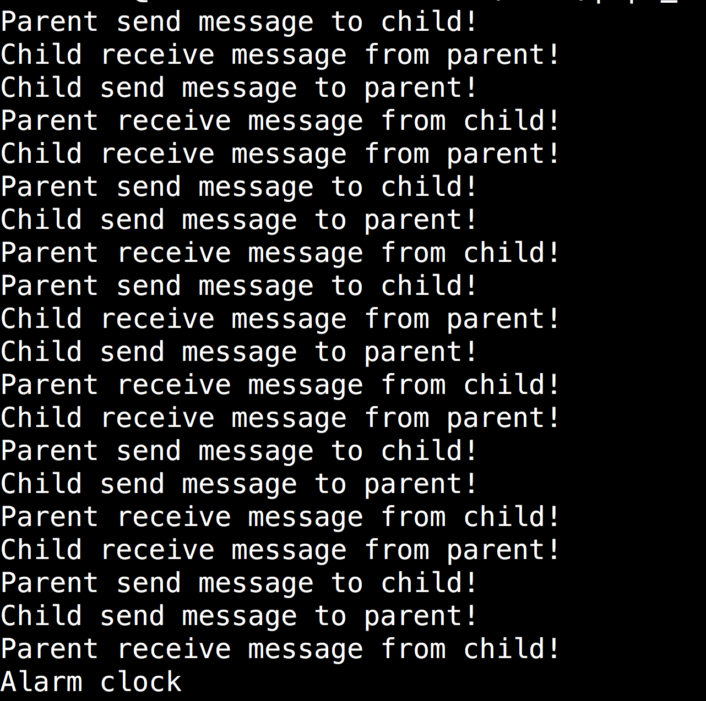

Exercise 1 : Use pipe to synchronize processes
After trying pipe1.c, pipe2.c and pipe3.c, you should be able to answer questions Q1-6. According to Q4, we know that when pipe is empty, the reader process blocks until writer process write something into pipe. Similarly, when pipe is full. the writer process blocks until reader process reads something from pipe. pipe-ex1.c use this property to synchronize processes. In pipe-ex1.c, parent and child processes need communicate with each other according to the following rules:
- Parent sends a message (a character "p") to child.
- Child sends acknowledgment message (a character "c") to parent on receiving "p", otherwise, child waits and does nothing.
- When parent receives "c", it sends the next "p" to child, otherwise, parent waits and does nothing.
Before fork(), we create two pipes as shown in the following figure. Parent writes the character "p" across the top pipe when TELL_CHILD is called, child writes "c" across the bottom pipe when TELL_PARENT is called.

Exercise-1 CompleteTELL_PARENT,TELL_CHILD,WAIT_PARENT,WAIT_CHILDto make parent and child communicate correctly. That is to say,pipe-ex1.cshould output as below.

/*pipe-ex1.c*/
#include <stdio.h>
#include <stdlib.h>
#include <unistd.h>
static int pipefd1[2],pipefd2[2];
/*Create two pipes*/
void TELL_WAIT(void){
if(pipe(pipefd1)<0 || pipe(pipefd2)<0){
perror("pipe");
exit(EXIT_FAILURE);
}
}
void TELL_PARENT(void){
/* send parent a message through pipe, need you to complete*/
printf("Child send message to parent!\n");
}
void WAIT_PARENT(void){
/* read message sent by parent from pipe, need you to complete*/
printf("Child receive message from parent!\n");
}
void TELL_CHILD(void){
/* send child a message through pipe, need you to complete*/
printf("Parent send message to child!\n");
}
void WAIT_CHILD(void){
/* read the message sent by child from pipe, need you to complete*/
printf("Parent receive message from child!\n");
}
int main(int argc, char* argv[]){
TELL_WAIT();
pid_t pid;
pid = fork();
//set a timer, process will end after 1 second.
alarm(10);
if(pid!=0){
while(1){
sleep(rand()%2+1);
TELL_CHILD();
WAIT_CHILD();
}
}else{
while(1){
sleep(rand()%2+1);
WAIT_PARENT();
TELL_PARENT();
}
}
return 0;
}